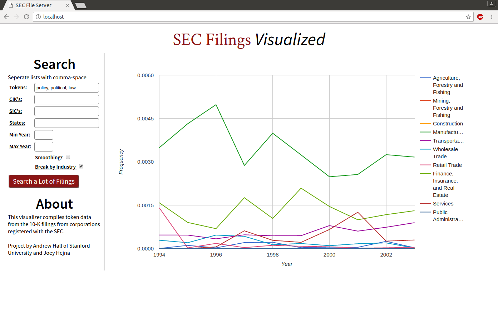
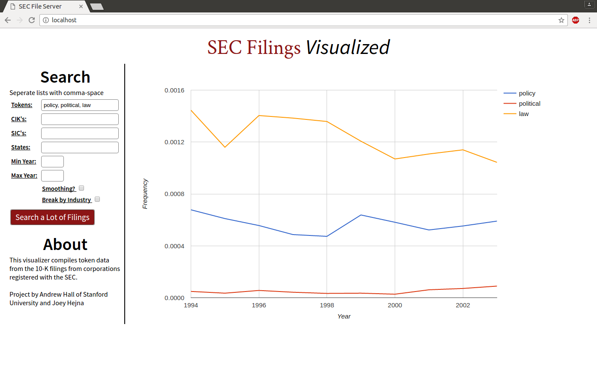

Language Processing for SEC Filings

- Date: Summer 2016
- Technologies: Python Natural Language Toolkit, SQL, Javascript, Google Charts API
- Role: Research Assistant at Stanford Department of Political Science
Over the summer I worked as research assistant at Stanford's Department of Political science under the supervision of assistant professor Andrew Hall. I worked on a research problem involving 1.3 Terabytes of 10-K and 10-Q filings that were scraped from the U.S. Securities and Exchange Commission. The basic approach was to format, parse, and then split the text files into n-grams, units of varying numbers of words, in order to make statistical correlations against time, industry, or firm. I completed all natural language processing in the natural language toolkit python environment. The end goal of the project is to create a publicly available web visualizer for all of the language data, similar to the Google N-Grams visualizer for all texts within Google Books.I was as the primary programmer on the research team of approximately eight graduate and undergraduate students. I developed the algorithms to organize and interpret the raw text of the scraped corporate filings. The first step was to use python scripts in order to preprocesses and clean the files, before accurately parsing information from them. From their I completed two different objectives. I designed a robust program flow designed to extract common bigrams from all of a single firm's filings, essentially resulting in a sparse frequency matrix of all firms. My second task was creating the web interface for performing searches and visualizing results for the word tokens in the filings. Users can plot word frequencies over time and against industry segments. This involves a full-stack with an multi-table indexed SQL backend in conjunction with PHP, HTML/CSS for the site, and JS and Google Charts API for visualization. I wrote all of the code, defined the SQL schema, and spent hours optimizing the runtime.
